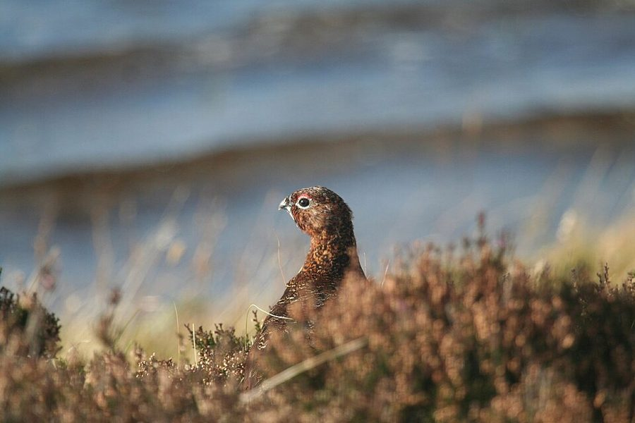
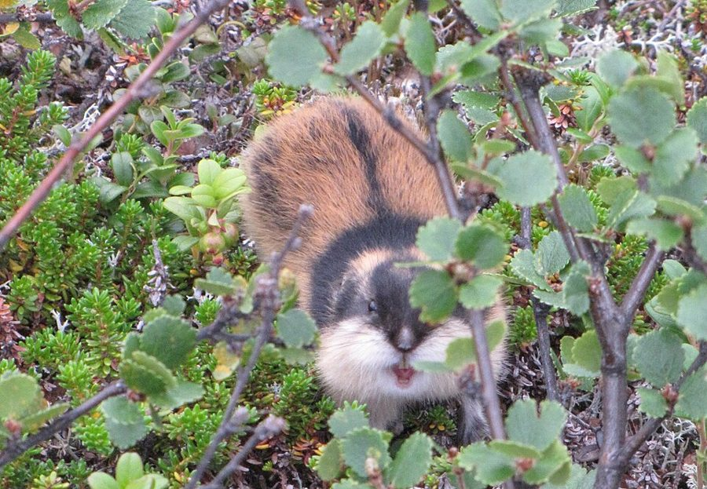
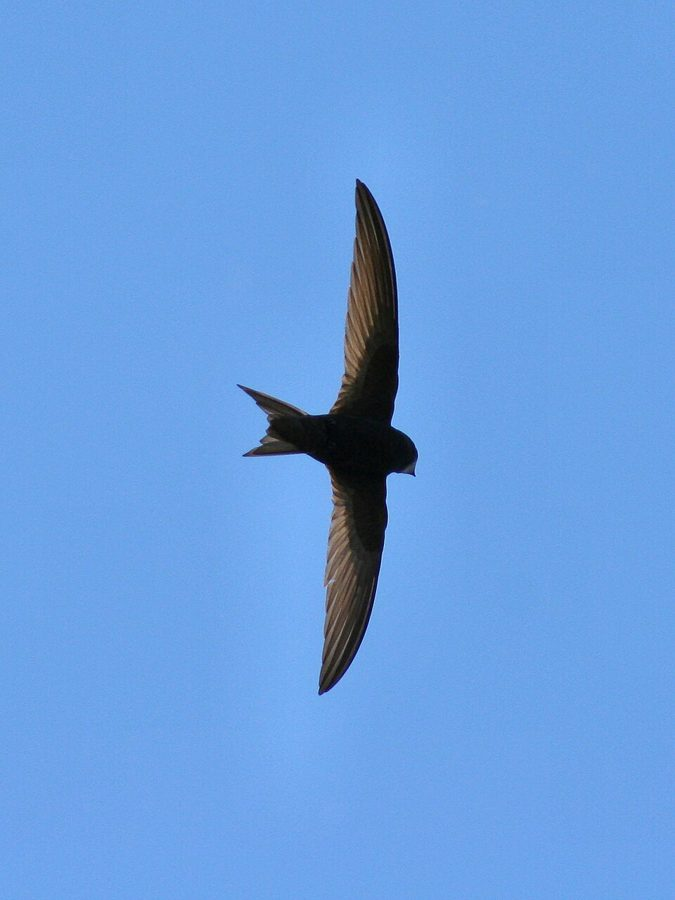
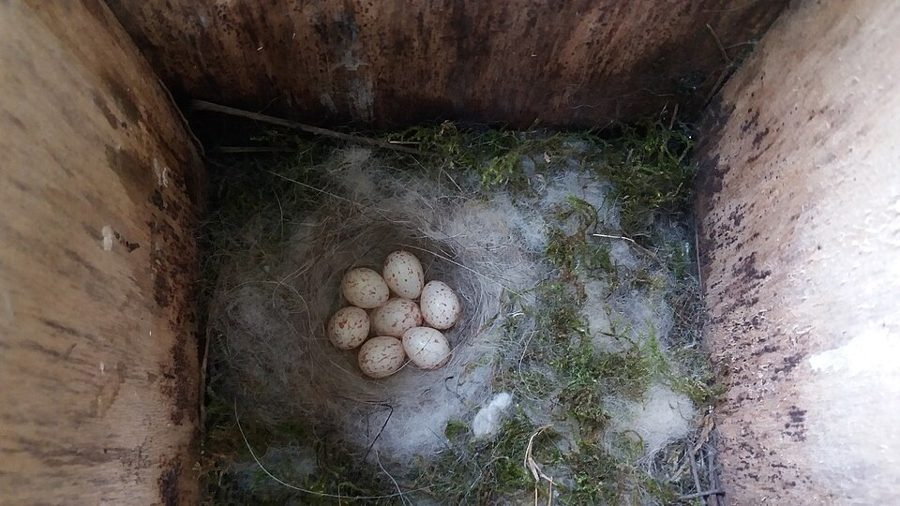
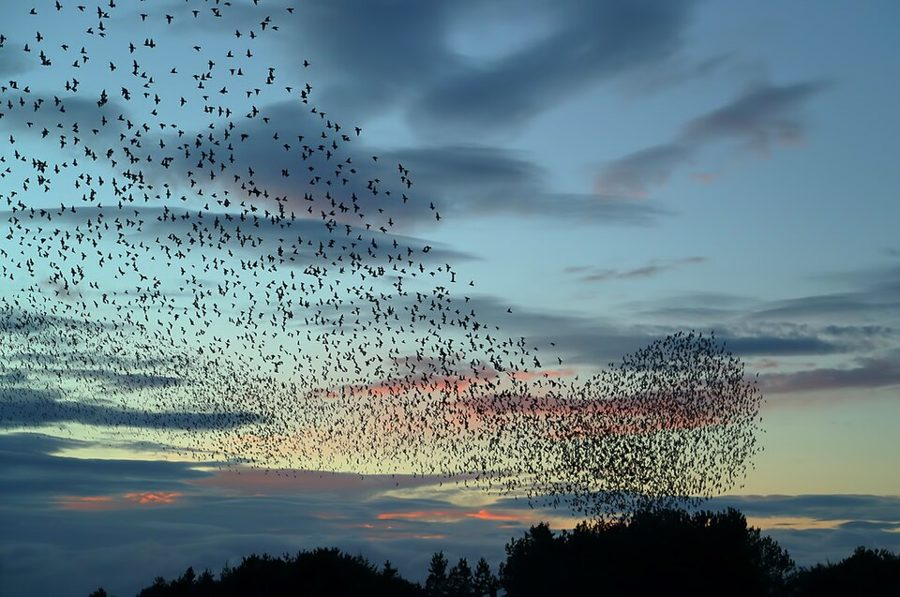
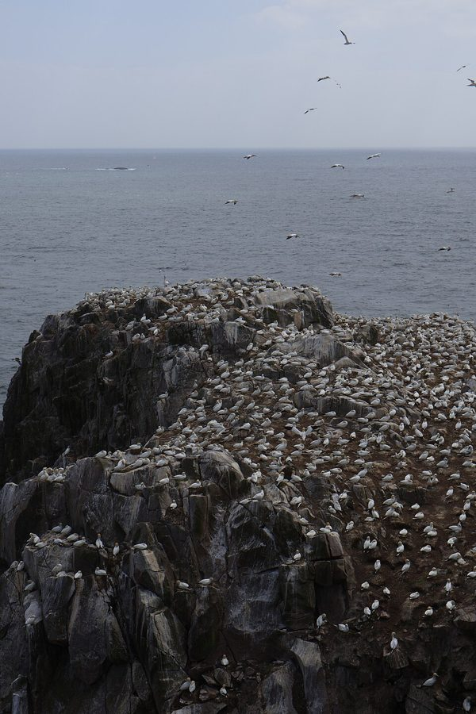

这一页在做什么
第 7 章整章。上一章讲要不要帮一个已经活着的亲属，这一章换一个问题：要不要再生一个、一窝生几个。野生动物从不无限制地繁殖，类群选择的主将 Wynne-Edwards 说，那是动物为了群体自觉少生。Dawkins 先尽量公平地转述他，再借鸟类学家 Lack 的窝卵数研究给出另一种解释，拿红松鸡、老鼠、椋鸟一个个过。读的时候抓两条线：两边争的究竟是哪一点；作者谈人类人口的几段是他自己的看法，和生物学论证分开读。

一只雄红松鸡从石楠丛里探出头。这种鸟吃石楠，在英国的荒原上划地盘；第 23–24 段里，没占到地盘的个体为什么「认命」，是本章争论的焦点之一。Alastair Rae，CC BY-SA 2.0，维基共享资源 读之前：这一页在全书的哪里
上一页（第 6 章末）讲的是：一个个体该不该照顾已经出生的亲属，按亲缘远近算账。第 3 段作者明说，这一章换个问题，看它们该不该把新个体带到世上。第 4 段回指第 1 章：类群选择之争主要就打在这个题目上。第 12、15 段两次回指第 5 章讲过的领地和优势序位；第 24、31 段借用第 4 章「动物是赌徒」「预测」的说法。章末第 35 段预告：下一章讲家庭内部的冲突，配偶之间的冲突放到第 9 章。
动物确实不会无限制地生。少生，是为了群体，还是为了自己？
读的时候带着这几个问题。不用先找答案，读完回来对照「检查一下理解」。
作者把「生」和「养」分成两种决定。为什么一个只养不生的种群维持不住？§1
在哪些事情上，作者其实同意 Wynne-Edwards？两人的分歧到底落在哪一个词上？§2
一只鸟多下一个蛋，为什么最后可能养大更少的孩子？这和「为了群体少生」听起来很像，差别在哪？§4
拥挤时少生，两种理论都能解释。那这条事实能不能当作任何一方的证据？§5
这一页的路线
这一章的骨架是「先立靶子，再换一种解释，逐个例子拆」。§1 很短，只做一件事：把「生」和「养」分开，为整章定题。§2 刚提到 Wynne-Edwards 就岔开去讲人类人口，一口气四段算账，读到这里会觉得跑题；第 10 段才回到动物，先摆出两派都承认的事实。§3 全是转述，作者有意把对手的理论讲得动听，末段才翻过来。§4 立起 Lack 的窝卵数，中间又插进福利国家两段，这是第二次岔到人类。§5、§6 回到动物，一个例子一个例子用同一把尺子量，最后一个例子（椋鸟）是假想的。
上一行：动物和理论
下一行：人类（作者插话）
生与养 §1
人口算术 §2
共同的事实 §2
温-爱德华兹 §3 转述
拉克的窝卵数 §4
福利国家 §4
红松鸡、老鼠 §5
椋鸟·假想 §6
本站示意图。上一行是动物和理论，下一行是作者两次岔到人类社会的插话；绿点是作者转述的对手理论。折线是阅读顺序。 作者落在哪： 动物确实在「计划生育」，但不是为了群体少生，而是每个个体都在追求自己养大的孩子最多；生多了反而养大得少。凡是看起来支持类群选择的例子，都能这样读回自私的个体。
分节地图
这一页是原书第 7 章的全部六节。原书各章没有小标题，粗体的节名是本站起的，下面是这一节第一段开头的几个词，在电子书里搜它就能跳过去。读完打个勾。
生育与抚养是两种决定约 600 词 It is easy to see why … 定题。第 1 段的两种「决定」是本章的钥匙；第 2 段用到第 5 章的 ESS；第 4 段点出对手 Wynne-Edwards，星号是注 41。 人口爆炸与动物为何不爆约 1000 词 This is a very attractive hypothesis … 第 5–9 段岔到人类人口，是作者的个人看法。第 10–11 段回到动物：两派同意什么，分歧在哪个词上。 温-爱德华兹：领地是生育许可证约 1200 词 Wynne-Edwards supposed that individuals have fewer … 第 12–17 段全是转述：领地、优势序位、炫耀性行为。别把这几段当成作者的观点；第 18 段他才表态。 拉克的窝卵数与福利国家约 1100 词 Although he would never have used … 第 19–20 段是全章的理论核心，读两遍。第 21–22 段又岔到人类：福利国家和避孕，两段要连着读。 红松鸡的等待与拥挤的老鼠约 1000 词 Returning to wild animals, the Lack … 用 Lack 的思路逐个改读对手的例子。第 26 段区分「直接原因」和「进化上的解释」，第 28 段是两派结论相同、理由不同的地方。 椋鸟的喧哗：炫耀行为约 1000 词 The selfish gene theory has no … 第 30 段的录音实验是假设的，不是真做过。第 33 段推出「会有人作假」；第 34 段是全章的结论。
先用中文过一遍：这一页的概念
先把这一页用到、作者默认你懂的几个概念讲一遍。讲的是概念本身，作者拿它推出什么，读原书时自己看。前几章讲过的类群选择 、进化稳定策略 、基因库 ，点进去看。
§1 种群调节 population regulation 生态学的老问题：任何物种按自己的生殖力放开生，几代就会多到不可思议，可野外的数量总是在某个范围里上下。是什么把它拉回来？一种答案是被动的：数量越多，食物越紧、病越容易传、天敌越容易得手，死的就越多，这叫「密度制约」。另一种答案是主动的：动物自己在拥挤时少生。Wynne-Edwards 主张后者，而且认为少生是为了整个群体不把资源吃光。打个比方：网络拥塞时，可以等路由器丢包（被动），也可以由每个发送方自己减速（主动）；后一种办法要靠大家都守规矩，一个只顾自己猛发的发送方就能占便宜。
在这一页： 第 4 段点出 Wynne-Edwards 的类群选择是在这个题目下提出的。第 10–11 段说两派都承认数量受到调节，争的是靠什么选择出来。
§3 领地 territory, territoriality 动物花力气不让同类进入的一块地方。有的领地很大，吃住和育雏全在里面（欧亚鸲，也就是英国人说的 robin）；有的只是巢周围一小圈，里面没有食物（许多海鸟和鸥）。占不到领地的个体，鸟类学里常叫「游荡者」（floater），它们往往不能繁殖。领地为什么会出现，有好几种解释：保住食物、吸引配偶、减少打斗。第 5 章从 ESS 的角度讲过另一种看法：先到者守、后到者让，可以只是一个稳定的约定，见不对称竞赛 。
在这一页： 第 13–14 段转述 Wynne-Edwards：领地是数量有限的「生育许可证」。第 23–24 段作者用红松鸡的例子把它改读成自私个体的赌法。
§3 炫耀性行为 epideictic behaviour / display epideictic 来自希腊语「展示」。作者说这是 Wynne-Edwards 自造的词；严格说古典修辞学里早有它（典礼上的展示性演说），他是 1962 年把它借到动物身上。他的设想是：椋鸟傍晚成群盘旋、蠓虫在门柱上方成团飞舞，是在给种群做「普查」，每个个体据此感知密度，密度高就少生。按他的说法，这种感知是神经或激素的自动机制，不是有意识的计数。动物为什么成群，别的解释还有很多：躲天敌（见自私兽群 ）、交换觅食信息、夜里取暖。说某一种聚集是「炫耀性」的，要证明它的作用确实是让动物调整生育。
在这一页： 第 17 段转述这个设想，第 29 段说当时没有直接证据，第 30–33 段假设真有证据，看自私论怎么接。
§4 最适窝卵数 optimal clutch size 窝卵数是一只雌鸟一窝下几个蛋。英国鸟类学家 David Lack 1940 年代提出：下得多，每只雏鸟分到的卵黄和喂食就少，活下来的比例下降；两头一乘，总有一个数让最后养大的雏鸟最多。下面这张图用的是本站编的数字：一窝 5 个时平均养大 2.5 只，最多；下 8 个反而只养大 1.6 只。「最适」是对这只鸟自己而言，不是对群体。后来的研究在这个框架上加了一笔：亲鸟自己的存活和来年的繁殖也要算进成本，最适数因此可能比「养大最多」的那个数更小（见「对照今天」）。
0
1
2
0.9 1
1.6 2
2.1 3
2.4 4
2.5 5
2.4 6
2.1 7
1.6 8
一窝下几个蛋 →
平均养大几只
本站示意图，数字是编的：假定一窝 1 个蛋时雏鸟存活率 90%，每多一个蛋存活率降 10 个百分点。蛋数乘存活率，养大的数先升后降，一窝 5 个最多。 在这一页： 第 19–20 段，全章的理论核心。第 28 段把它推到「看年景调整」，第 31–32 段再推到「预测来年」。
§5 直接原因与终极原因 immediate (proximate) cause; ultimate (evolutionary) explanation 生物学里问「为什么」有两层。直接原因问机制：激素、神经、环境刺激怎样让动物这样做。终极原因问演化：自然选择为什么偏爱这样做的个体。这个区分常归于演化生物学家 Ernst Mayr 1961 年的文章；Tinbergen 1963 年提出的「四个问题」也包含这两层。例子：人为什么吃甜食？直接原因是甜味让大脑愉快；终极原因是祖先环境里爱吃甜的人更容易摄入足够热量。程序员的类比：「这行代码为什么执行」可以答「条件为真」，也可以答「当初为什么有人写它」。两层答案不冲突，也不能互相代替。今天通行叫「近因」和「终极因」。
拥挤
「压力」
雌鼠少生
直接原因：怎样发生的（两派没有分歧）
再往上问：自然选择为什么偏爱它
类群选择
少生的群体不容易把食物吃光而灭绝
自私的个体
荒年少生的雌鼠，自己养大的反而多
终极原因：两派分歧在这一层
本站示意图，用的是书里第 26–28 段的老鼠例子。 在这一页： 第 26 段：拥挤使老鼠少生，直接原因常叫「压力」，可还要问进化上的解释。第 27–28 段两派在这一层给出不同答案。
书里的人和研究
按在书里出现的顺序排，标题前是节号。只讲到读懂这一页需要的程度。
§1 Wynne-Edwards 和《动物的散布与社会行为》第 4 段点名的对手。他 1962 年出版 Animal Dispersion in Relation to Social Behaviour ，主张动物通过领地、等级、集群这些社会行为把数量控制在吃光食物之前，而这种克制是靠群体之间的选择进化出来的。这本书当时影响很大，招来 Lack、G. C. Williams 和 Dawkins 等人的批评，也带动了大量鸟类行为研究。作者在注 41 里说，他 1978 年公开撤回过自己的主张，后来的书又改了回去，那是他 1986 年的 Evolution through Group Selection 。
V. C. Wynne-Edwards 1906–1997 英国动物学家，先后在加拿大 McGill 大学和苏格兰 Aberdeen 大学任教，1970 年当选皇家学会会员。在这一页里是被转述、被反驳的「类群选择」一方。
§2 Ardrey、旅鼠和猞猁
挪威旅鼠，摄于芬兰的 Kevo 自然保护区。Lakkahillo，CC BY-SA 3.0，维基共享资源 第 10 段说，Wynne-Edwards 本人和把他的观点普及开来的 Ardrey 都没强调一点：两派其实共享大量事实。作者举的例子里，旅鼠数量暴涨暴跌；加拿大猞猁的数量有节奏地起伏，这是从哈德逊湾公司历年收购的毛皮数推出来的，生态学家 Charles Elton 等人分析过这批记录，周期约十年。第 25 段又说旅鼠大批外迁不是为了给留下的同伴腾地方。附带一句，书里没提的「旅鼠集体跳崖自杀」是个流传很广的误传，1958 年迪士尼纪录片《白色荒野》里那段是摆拍的。
Robert Ardrey 1908–1980 美国剧作家、编剧，后来写了一系列讲人类天性的通俗书，最有名的是讲领地本能的 The Territorial Imperative （1966）。作者在第 10 段只提了一句。
§4 David Lack 和他的雨燕、山雀
普通雨燕在空中飞。Paweł Kuźniar，CC BY-SA 3.0，维基共享资源 第 19 段说他是「自私基因的计划生育理论」的总设计师，同一句里先打了招呼：他本人绝不会用这个名字。Lack 并不讲基因视角，他讲的是个体的自然选择。他长期主持牛津的鸟类学研究所，1940 年代末在牛津大学自然史博物馆的塔楼里装巢箱研究普通雨燕，这项观察延续至今；同一时期在牛津附近的 Wytham 林地开始了大山雀的长期研究。窝卵数的理论就出自这些野外数据。
David Lack 1910–1973 英国鸟类学家、生态学家，牛津大学 Edward Grey 鸟类学研究所所长。代表作有《达尔文的雀鸟》（1947）、《动物数量的自然调节》（1954）、通俗书《塔里的雨燕》（1956）。

巢箱里的一窝大山雀蛋，这一窝是 7 枚。第 19 段说大山雀一窝六个或更多，有的多到十二个。Nikola Veljković，CC BY-SA 4.0，维基共享资源 §5 红松鸡：荒原上的领地和「流浪者」第 23 段说的是 Wynne-Edwards 和同事在苏格兰东北部荒原上做的研究，在 Aberdeen 工作的 David Jenkins、Adam Watson 等人从 1950 年代末开始长期观察。他们发现：每年争领地时总有一批鸟落空，这些落空的鸟大多在冬天死去或离开；把领地主人移走，空位很快被原来没领地的鸟补上，新主人照样繁殖。这说明落空的鸟并非不能生，只是没机会。作者转述的就是这些发现，后来的研究怎么修正，见「对照今天」。
§6 椋鸟的群栖和 Krebs 的「好汉计」
黄昏时成群盘旋的椋鸟，摄于苏格兰 Prestwick。第 17 段转述 Wynne-Edwards：这种场面是在「普查」种群。Walter Baxter，CC BY-SA 2.0，维基共享资源 第 33 段借来的说法出自 Krebs 1977 年的一篇论文，原本讲的是鸟的鸣唱：有些鸟会唱很多种调子，Krebs 推测这能让一只鸟听起来像好几只，吓退想来占地盘的同类，后来又在牛津的大山雀身上做实验检验。名字来自 P. C. Wren 1924 年的小说 Beau Geste ：法国外籍军团的守军把阵亡士兵的尸体架在城垛上，冒充人还很多。把这个想法套到椋鸟冬季的喧哗上，是作者自己的推想，他也说明了原来是在「另一个场合」提出的。
John R. Krebs 1945– 英国行为生态学家，长期在牛津研究鸟类的觅食和鸣唱，和 N. B. Davies 合编的行为生态学教材影响很大，后来受封勋爵。

Great Saltee 岛上的塘鹅繁殖群。塘鹅一窝只下一个蛋，第 31 段拿它说明「固定的预测」。OceanFlowers，CC BY-SA 4.0，维基共享资源 词与短语
按节排，每节前面是分节地图里的节名。标着「每个字都认识」的，是熟词生义、习语和反话，最容易读错。灰色的那几个字是原句里的位置，在电子书里搜它就能找到。
§1 生育与抚养是两种决定
unconscious strategic move
… word decision to mean unconscious strategic move.
无意识的策略性举动
作者先给「决定」下定义：这一章说动物「决定」生不生、养不养，都是比喻，没有谁在盘算。同一段里那几句带引号的「自问」也要这样读。
so and so
… relatedness to me is so and so;
如此这般（某个数）
占位用的说法，相当于「是 x」。紧跟着的 such and such 也一样，是「多少多少」。
be bound to
… caring and bearing are bound to compete …
必然会
bound 在这里是「注定的」，不是「被绑在一起」。生和养抢的是同一份时间和资源。
muddle up
… people have muddled the two things up.
把……混为一谈
因为鸟和哺乳动物生了就养，人们把两件事搅成了一件。
has chiefly raged
… in Chapter 1, has chiefly raged.
（争论）主要在这里激烈展开
rage 说争论、战火、疾病时是「肆虐、激烈进行」，不是「发怒」。
§2 人口爆炸与动物为何不爆
Stop at Two / Start at Thirty
… could equally well be changed to …
「两个就够」改成「三十岁再生」
前一句是当时宣传节育的口号。作者的玩笑：人口按「每代」增长，晚生几年，每年的增速就慢了，所以口号改成「三十再生」也一样管用。
spell trouble
… accelerating population growth spells serious trouble.
意味着大麻烦
spell 作动词除了「拼写」，还有「预示、意味着」。
bring something home
… can be used to bring this home.
让人真切地明白
不是「带回家」。bring it home to someone 是让人切身体会到。
a not unrealistic assumption
… a not unrealistic assumption. In 1,000 …
一个并非不现实的假定
双重否定的英式轻描淡写，口气很冷：假定他们都很瘦，并不离谱，因为前面刚说过许多人已经营养不良。
It will not have escaped you
… It will not have escaped you that …
你一定已经注意到
字面「它不会逃过你」。作者在提醒：前一段那串数字是假想的计算，不是预言。
It is no use appealing to
… It is no use appealing to advances …
指望……是没用的
appeal to 在这里是「求助于、寄希望于」，不是「吸引」。
short of
… short of mass emigration into space, …
除非（真的做到）……
short of 在这里是「除了……这种极端办法以外」。作者是在挖苦：除非每秒发射几百万枚火箭往太空移民。
It is called starvation.
… It is called starvation.
它叫作饥饿。
反话收尾：那些领袖要「自然的」办法限制人口，自然的办法确实会来，名字叫饿死。全书口气最重的句子之一，是作者对人类社会的个人表态。
part company with
… This is where Wynne-Edwards parts company with …
在这一点上和……分道扬镳
字面「和……分开走」。正统理论说基因看不见未来，Wynne-Edwards 认为真正利他的节育能进化出来。
have something at heart
… the whole species at heart.
把……放在心上
自私的基因「不会把整个物种的福祉放在心上」。这里的「心」也是比喻。
a large body of
… is a large body of agreed facts …
大量的
body 在这里是「一大批、一整套」，不是「身体」。agreed facts 是两派都承认的事实，这句是本节的转折。
catch up with
… or predators catch up with them long …
（厄运）找上门
不只是「追上」：野生动物还没老，饥饿、疾病或天敌就先找上了它们。
In a nutshell
… In a nutshell, the disagreement is over …
简单说
字面「装在一个坚果壳里」。下面一句就是全章争论的一句话版本：节育是利他的还是自私的。
§3 温-爱德华兹：领地是生育许可证
on the face of it
… on the face of it, a contradiction …
表面上看
本章出现三次（第 12、18、24 段），后两次都在预告「下面要翻过来」。
a contradiction in terms
… a contradiction in terms. He therefore …
自相矛盾的说法
in terms 指「字面本身」。自然选择挑出「生得比平均少」的个体，说法本身就矛盾，所以 Wynne-Edwards 只能求助于类群选择。
token prize
… fighting over a token prize, rather …
象征性的奖品
token 在这里是「象征、凭证」，和程序里的令牌是一个意思：不值钱，但凭它能换到别的东西。领地就是换繁殖资格的凭证。
wedded to
… may be wedded to a male’s territory …
死心塌地依附于
双关：wedded 本义是「结了婚的」，引申为「执着于」。雌鸟「嫁」的可能是那块地，不是那只雄鸟。
get on with
… so that they can get on with propagating …
安心去做（某事）
get on with 是「不受打扰地继续干」。这里转述 Wynne-Edwards 的口气，带点调侃：落选者自觉让开，好让幸运儿去「繁衍物种」。
get ideas above one’s station
… does not get ideas above his station.
不安本分、想往上爬
英国阶级社会的老话，station 是「身份地位」，不是「车站」。和前半句的 knows his place（知道自己的位置）是一对。
find out the hard way
… then finding out the hard way that …
吃了苦头才明白
the hard way 是「通过惨痛经历」。Wynne-Edwards 的意思：种群不必先生多了、饿死一批再知道错了。
take its toll
… starvation itself actually takes its toll.
造成伤亡
toll 本义是过路费，引申为「代价、死伤人数」。
Just so
… Just so; a thermostat needs a thermometer …
正是这样
不是「只是这样」。恒温器和温度计的比方是作者替 Wynne-Edwards 打的：要按密度调节生育，就得有测密度的办法。
do justice to
… I have tried to do justice to …
公正地对待、如实呈现
不是「主持正义」。作者说他尽量把对手的理论讲得公道，所以前面几段听起来动听。
had better be good, or else
… had better be good, or else.
最好过硬，不然的话……
or else 后面不说完，是威胁的口气，像「你最好给我拿出真凭实据来」。下一句：可惜证据不过硬。
§4 拉克的窝卵数与福利国家
would never have used that name
… he would never have used that name, …
他自己绝不会用这个名字
作者先打招呼：Lack 是「自私基因的计划生育理论」的总设计师，但他本人不讲基因视角。别把 Lack 读成基因选择论者。
a gene for laying two eggs
… may be a gene for laying two …
「下两个蛋的基因」
A moment’s reflection shows
… A moment’s reflection shows that this simple …
稍一想就知道
reflection 在这里是「思考」，不是「反射、倒影」。
anything but
… for reasons that are anything but altruistic.
绝不是
最容易读反的短语之一：anything but X 是「除了 X 什么都是」，也就是「完全不是 X」。
work oneself nearly to death
… the parents work themselves nearly to death …
累得半死
夸张说法。主语是 the parents，亲鸟双方，不只是母鸟。
strike a balance
… She has to strike a balance between …
取得平衡
strike 在这里是「达成」，和 strike a deal 一样。
set out with modest ambitions
… had set out with more modest ambitions.
一开始就不贪多
set out 是「起步、着手」。生之前就把目标定低一点，最后反而养大得多。
step in
… simply steps in and keeps the surplus …
出面接手
step in 是「介入、插手」。主语是国家，作者紧接着说国家就是「其余的人」。
a very unnatural thing
… welfare state is a very unnatural thing.
很不自然的东西
「不自然」在这里不是贬义，下一段作者说大多数人认为福利国家非常可取。这个词是为了和第 22 段「避孕不自然」对上。译本这里译错了，见译本勘误。
should not be abused
… support for children should not be abused.
不应被滥用
这一句单拿出来容易读成反对福利，要和下一段连着读：作者支持福利国家，担心的是它被钻空子。
less free from suspicion
… seem to me less free from suspicion.
更难脱嫌疑
英式的委婉说法，意思是「更可疑」。作者没点名是哪些机构和领袖，读的时候也不要替他点名。
§5 红松鸡的等待与拥挤的老鼠
parcel out
… they parcel out the moors in territories …
把（荒原）划分成一块块
parcel 作动词是「分成小份」，不是「打包寄出」。
try, try, and try again
… try, try, and try again to oust …
一次又一次地试
化用英语的励志老话：If at first you don’t succeed, try, try again。
wait in the wings
… to wait in the wings as understudies, …
在侧幕候场
戏剧用语：the wings 是舞台两侧的侧幕，understudy 是替补演员。作者用它转述 Wynne-Edwards：流浪者是群体繁殖这台戏的替补。
step into the shoes of
… ready to step into the shoes of …
接替（某人的位置）
字面「穿上某人的鞋」。
bull-at-a-gate
… rather than a bull-at-a-gate strategy.
像公牛撞门那样莽撞
来自 like a bull at a gate，形容不管不顾地硬冲。和前面的 wait-and-hope（等着碰运气）相对。「动物是赌徒」的说法见第 4 章。
bide one’s time
… He is biding his time, waiting for …
等待时机
bide 是古词「等待」，现在几乎只用在这个短语里。
with hindsight
… with hindsight we can see that for …
事后看来
作者的要点：一个赌注事后输了，不等于当初下错了注。这一段说了两次。
every selfish one of them
… They are seeking, every selfish one of them, …
每一只都自私地
故意把 selfish 塞进 every one of them 中间，打趣「旅鼠为群体牺牲」的说法。
nothing of the kind
… It is nothing of the kind.
根本不是这么回事
斩钉截铁的否定。拥挤使老鼠少生，常被当成 Wynne-Edwards 的证据，作者说它根本不算。
of itself
… does not of itself help to explain …
本身（并不能）
给现象起个名字叫「压力」，名字本身什么也没解释。
hit on
… if they had hit on just the right …
碰巧找到、选中
hit on 是「想到、碰上（正确的东西）」，不是「打」。
§6 椋鸟的喧哗：炫耀行为
Not a bit.
… theory be embarrassed? Not a bit.
一点也不。
not a bit 是「丝毫不」，不是「不是一点点」。
bumper year
… in particular bumper years for fish …
丰年
bumper 作形容词是「特大的、丰收的」，不是「保险杠」。
old wives’ tale
… Whether any particular old wives …
老辈人的说法、无稽之谈
字面「老太太们的故事」。指民间流传、多半没根据的说法，比如「冬青果多，来年春天天气好」。
Beau Geste Effect
… the Beau Geste Effect after the novel …
好汉计效应（以小说《博·杰斯特》命名）
Beau Geste 是 1924 年的小说名，也是主人公的名字，法语字面是「漂亮的姿态」。典故见上面「书里的人和研究」。
right all along, but for the wrong reasons
… he may have been right all along, …
（他）也许一直是对的，只是理由不对
半开玩笑的让步。right for the wrong reasons 就是「歪打正着」；注意前面的 may。
should any such evidence turn up
… should any such evidence turn up.
万一真有这样的证据出现
句首的 should 是倒装的条件句，等于 if any such evidence should turn up，不是「应该」。
So much, then, for
… So much, then, for quantitative considerations of …
关于……就说到这里
收束一个话题的套语，不是「这么多」。下面转到家庭内部的冲突。
译本勘误
对着中译本（40 周年增订版）读的时候看这一节。下面是译本这几节和这一页尾注里会让人读错的地方：灰字是英文原文那一处的几个词，在英文电子书里搜它；方框里是译本的原句，在译本电子书里搜它。措辞别扭但意思没错的不收。全书的勘误汇总在译本勘误 。
§2 分歧在「为什么」，不在「怎么」误译 … disagreement is over why they are regulated …
译本：「而在于怎么得到调节」
原文是：分歧在于出生率「为什么」受到调节，即靠哪种自然选择进化出来的。「怎么调节」是机制问题，两派并不争；这一章争的正是「为什么」。原书 why 还是斜体。
§3 不是「不大可能」，是绝不可能误译 … normal natural selection cannot possibly give rise …
译本：「正常的自然选择不大可能」
cannot possibly 是「绝不可能」。Wynne-Edwards 自己也承认，普通的自然选择根本选不出这种利他的少生，所以他才必须求助于类群选择。译成「不大可能」，这一步推理就松了。
§3 「鲭鸥」是银鸥术语 … Or, in herring gulls for instance, …
译本：「另一种情况可以以鲭鸥为例」
herring gull 通称银鸥（也作鲱鸥），herring 是鲱鱼，不是鲭鱼。这里拿它作「领地里没有食物、只有一个巢」的例子。
§4 累死累活的是亲鸟双方误译 … the parents work themselves nearly to …
译本：「雌鸟就要累死累活地为它们找食物」
原文这几句的主语是 parents（亲鸟），孵蛋、喂雏都是双亲；后面「每 30 秒送一次食物」的也是「一只亲鸟」，不是雌鸟。只有造蛋、筑巢那两句说的是母鸟。
§4 福利国家「很不自然」误译 … welfare state is a very unnatural thing.
译本：「但是福利国家乃是非同寻常之物」
unnatural 是「不自然」。下一段的论证全靠这个词：避孕被指责「不自然」，福利国家同样不自然，有了后者就得有前者。译成「非同寻常」，两段的呼应就断了。
§4 不需要的是「利他的节育」误译 … There is no need for altruistic restraint …
译本：「这里不需要对生育率的利他主义做出限制」
原文是：自然界里没有福利国家，所以用不着靠利他的自我克制来压低出生率，生多了的自会受罚。译本把「利他的克制」读成了「限制利他」，意思不通。
§4 「大概」被丢了误译 … are probably too ignorant in most cases …
译本：「大多数是出于愚昧无知才这么做的」
原文带着 probably：这些人「大概多半」是因为无知，谈不上有意钻空子。这是全书措辞最敏感的句子之一，作者留了余地，译本说成了断言。
§5 「优势序位」变成了「统治集团」术语 … territorial behaviour, dominance hierarchies, and so …
译本：「领地行为、统治集团等等」
dominance hierarchies 在第 12、15 段和第 5 章都译作「优势序位」，这里换成「统治集团」，像个政治词，读者会以为是另一样东西。
§5 食物「看起来」多，不是「显然」多误译 … territories containing apparently more food than the …
译本：「这些领地显然能为其主人提供」
英式英语的 apparently 是「看起来、似乎」。原文说领地里的食物似乎比主人需要的多，这正是 Wynne-Edwards 要的论据（不是为食物而争）；作者只是转述，没有替它担保。
§5 争领地的季节不是「发情期」误译 … Early in the season they fight over …
译本：「在发情期的早期」
原文只说「这一季」开头，指一年里争领地的那段时候；同段「季末」也一样。苏格兰的研究里，红松鸡秋天占领地，来年春天才繁殖。按译本读，会以为它们是在交配季节里争、交配季节结束时饿死。
§6 录音实验是假设的误译 … It might be demonstrated experimentally that …
译本：「这种情况可以用这样的实验加以证明」
原文整段都是假设：「假如能证明……」「也许可以用实验证明……」。译本后半段写成了「两相比较，前面一种产蛋量要少些。这说明……」，像是真做过的实验。第 29 段作者明说，当时没有直接证据。
§6 「也许」一直是对的误译 … he may have been right all along, …
译本：「除了理由不对之外，他所讲的始终是正确的」
原文带着 may：Wynne-Edwards「也许」一直是对的，只是理由不对。这是半开玩笑的让步，而且只针对炫耀性行为这一个想法，不是说他的理论整体对。
§6 全章结论漏了后半句漏译 … rather than restrict them for public good.
译本：「为的是使它们的出生率保持在最适度的数值上」
这一句后面原文还有：而不是为了公共利益去限制出生率。这半句是全章的对照点（自私的最适，对利他的克制），丢了它，结论就看不出在反驳谁。
§1 尾注 41：正因为错得明白误译 … By being wrong in an unequivocal way …
译本：「尽管犯了一个明显的错误」
原文是因果：正因为他错得毫不含糊，人们才普遍认为他逼着大家把选择的问题想清楚了（作者补一句：这一点被说过头了）。译成「尽管」，变成了让步。
§1 尾注 41：「我们一向理解的那种」类群选择误译 … Group selection, in the sense in which …
译本：「由于那些众所周知的原因」
原文是限定：按我们一向理解的那种意义上的类群选择，如今比初版时更不受生物学家待见。作者后面抱怨的，正是有人把这个名字用到别的意义上去。限定丢了，后半段就接不上。
§1 尾注 41：「你若以为相反，也情有可原」误译 … could be forgiven for thinking the opposite …
译本：「请你不要介意地想想相反的场景」
you could be forgiven for thinking 是习语：你会这样以为，也不怪你。作者是说：看美国新一代到处用「类群选择」这个词，你会以为它更流行了，其实不然。
§1 尾注 41：哲学家是被术语搞糊涂的误译 … started out muddled by this recent caprice …
译本：「使得这个本来就很混乱的术语变得更加混乱」
原文是：后来进场的哲学家一开始就被这阵用词的新风气搞糊涂了。哲学家是受害的一方，不是把术语搅乱的人。
值得停下来的句子
The disagreement comes not over whether birth-rates are regulated. The disagreement is over why they are regulated— §2 第 11 段。本站译：分歧不在于出生率是否受到调节，分歧在于它们为什么受到调节。
全章的枢纽，口气是认真下判断。关键词是原书用斜体标出的 whether 和 why。读这一章最常见的误读，是以为 Dawkins 否认动物会节制生育；他恰恰承认这一点，而且说两派共享的事实比读 Wynne-Edwards 的书时以为的多。争的只是演化上的「为什么」：为群体，还是为自己。译本把 why 译成了「怎么」，正好错在这个词上。
Wynne-Edwards’s idea of epideictic displays may actually be a good idea: he may have been right all along, but for the wrong reasons.— §6 第 33 段。本站译：Wynne-Edwards 关于炫耀性展示的想法，说不定真是个好主意：他也许一直是对的，只是理由不对。
一句带笑的让步，两个 may 都不能丢。作者让给对手的只是「炫耀可能存在」，而且马上把它收编：就算有，也是自私个体的把戏，还会有人虚张声势。紧接着他说 Lack 式的假说能解释一切看似支持类群选择的证据。这既是全章的底气，也是最值得追问的地方，见「本站怎么看」。
作者 1989 年的尾注
正文里的星号是 1989 年第二版加的，点了跳到书后的尾注。下面是这一页的每个星号：注里说了什么，值不值得现在就点开。英文是星号前的几个词，在电子书里搜它就能找到那个星号。
§1 Wynne-Edwards 认错又反悔，「类群选择」被滥用补充 … in the context of a theory of*
注分两半。前半讲人：Wynne-Edwards 1978 年公开承认理论家们的结论，作者引了他那段话，称赞他大度，随即说可惜他后来的书又反悔了。后半讲词：老意义上的类群选择比初版时更不受欢迎，可美国新一代把这个名字随手用到亲属选择等别的情形上，作者说十年前 Maynard Smith 等人已经把问题解决了，推荐 Grafen 的一篇文章来理清。值得点开，口气很冲，也是理解后来「多层选择」之争的入口（见「本站怎么看」）。
读完：作者到底说了什么
读完这一页的几节再看。下面是作者在这几节里的论点，由本站按论点重新组织，不按原书的顺序；每条下面是依据所在的段落，拿不准就回书里那几段再读一遍。
「生」和「养」是两种决定，只养不生的种群维持不住 作者把亲代行为拆成两种无意识的「决定」：把新个体带到世上，照顾已经存在的个体。从基因看，养弟弟和养儿子没有原则区别，可你不能「生」一个弟弟。两者争夺同一份资源；纯粹只养不生不可能是 ESS，会被专门生的突变个体入侵。
§1 第 1–3 段 动物确实节制生育，争的是演化上的「为什么」 两派都承认野生动物数量不会无限增长、每个物种的窝卵数大致固定。Wynne-Edwards 认为少生是为了群体，靠类群选择进化，并把领地、优势序位、成群聚集都看成人口调节器。作者说他尽量公道地转述了，这理论表面上颇有道理，但证据不过硬：每个例子都同样能按自私基因的思路解释。
§2 第 10–11 段，§3 第 12–18 段 节制生育是自私的：每个个体追求自己养大的孩子最多 转述 Lack（他本人不会用「自私基因」这个名字）：「越多越好」推下去是荒谬的，多生必然要以养得差为代价；每只雌鸟下的是让自己养大最多的那个数，想多养一个的，很可能最后养大得更少。这种「节育」的目的，和人们平常理解的节育正相反。
§4 第 19–20 段，§6 第 34 段 看似「认命」的克制，可以是自私个体的最优赌法，炫耀还会招来作假 红松鸡流浪者等空位、海豹按兵不动，作者说这「也可能」是自私个体的最优策略；拥挤的老鼠少生，两派结论几乎一样，理由完全不同。当时没有直接证据表明哪种聚集是炫耀性的；他假设真有，推出个体会按密度预测最适窝卵数，于是就有好处去夸大密度。
§5 第 23–28 段，§6 第 29–33 段 福利国家和避孕一样「不自然」，有前者就得有后者（作者对人类的个人看法） 人类生得太多，增产粮食只能暂时缓解，长远看很可能反而加快膨胀。自然界里生多了的父母孩子会饿死；福利国家养活多出来的孩子，他说大多数人认为这非常可取，但它容易被滥用，必须配上同样不自然的避孕。这是他的政见，不是本章生物学论证的一部分。
§2 第 5–9 段，§4 第 21–22 段
合起来： 这一章把第 1 章对类群选择的批评落到最难啃的地方：少生看起来是为大家好，作者说那是每个个体在为自己算账。要带走的是一种读法：遇到「为了群体」的解释，先问一个只顾自己的个体会不会做同样的事；如果会，就不需要群体的理由。
对照今天
这本书 1976 年出版。下面挑出这一页里能被后来的研究检验的说法，分「书里 / 当时 / 今天」三栏，并给一个结论。结论判的是标题里「书里的说法：」后面那一句。全书的这一节汇总在对照今天 。
成立 后来的研究支持这句话。部分成立 大方向对，细节或适用范围要改。被改写 后来的研究推翻了它，或者换了一种说法。有争议 学界至今没有定论，两边各有代表性的研究。书里的说法：每只鸟下的，正是能让自己养大最多孩子的那个蛋数（Lack 的理论）
书里 作者转述 Lack：多下一个蛋的个体很可能养大得更少，自然选择把窝卵数调到养大最多的那个数（§4 第 19 段、第 20 段）。
当时 Lack 1947 年提出，后来成为反驳「为物种利益少生」的主要依据。Charnov 和 Krebs 1974 年已指出：如果多养会降低亲鸟自己的存活，最适数就会小于「养大最多」的那个数。
今天 窝卵数由个体选择决定，这个框架没有动摇。但「正好等于养大最多的数」不大对：VanderWerf 1992 年汇总了 42 项人为加蛋或加雏的实验，加大的窝平均养出的幼鸟反而更多，说明许多鸟下得比「最多产」的数少。今天的解释是把亲鸟自身的存活和来年的繁殖算进成本，再加上年景好坏的不确定。核对于 2026-10。依据：VanderWerf, Ecology 73 (1992)；Charnov & Krebs, Ibis 116 (1974)。
书里的说法：增加粮食生产只能暂时缓解人口问题，还很可能加快人口膨胀
书里 作者说「绿色革命」之类长远看无济于事，和医学进步一样，很可能加快人口增长；不加控制的出生率必然带来死亡率的可怕上升（§2 第 8 段）。拉丁美洲 3 亿人「站满整个大陆」是他自己说明了的假想计算（第 7–8 段）。
当时 1960 年代世界人口增速达到历史最高，人口爆炸是公共话题，Ehrlich 1968 年的《人口炸弹》就预言了大饥荒。
今天 世界人口年增速在 1960 年代见顶（2% 多），如今已降到 1% 以下；联合国预计全球人口在 2080 年代中期达到约 103 亿的峰值。人均食物供应自 1961 年以来持续上升。拉丁美洲 2024 年约 6.6 亿人，生育率已低于更替水平。增产粮食没有把增速推高，增速是随着生育率下降而回落的。作者的数学前提（指数增长不能永远持续）没错，回落靠的也正是他说的「幸运的话，节育」。核对于 2026-10。依据：Our World in Data 人口增长页；联合国《世界人口展望 2024》；FAO 食物供应数据（经 Our World in Data）；联合国拉美经委会 ECLAC 新闻稿。
书里的说法：红松鸡里没占到领地的流浪者到季末大多饿死，只有领地主人繁殖
书里 作者转述 Wynne-Edwards 和同事的研究：失败者不再争，季末大多饿死；射杀领地主人后，空位立刻被流浪者补上并繁殖（§5 第 23 段）。
当时 苏格兰东北部 1950 年代末到 1960 年代的研究发现，秋天没有领地的松鸡几乎全部在冬天死去或离开；移走领地主人的实验显示空位会被补上。
今天 后来的研究发现这不是普遍规律。Park、Hurley 和 Hudson 2002 年分析苏格兰四个种群 1986–1993 年的数据，没有找到领地身份对越冬存活的显著影响，有些秋天没领地的鸟后来也育了雏；他们认为差别可能来自研究的尺度和天敌压力。「流浪者有机会」反倒更符合作者那种「等待也是赌注」的读法。核对于 2026-10。依据：Park, Hurley & Hudson, Journal of Avian Biology 33 (2002)。
本站怎么看
读完作者的论点，再看它站不站得住。每一块摆出三样：主流怎么看，作者怎么看，本站的评论。最后一句是本站对这一页的总体判断。
福利国家与避孕：一位生物学家在书里的政见
主流看法： 人口学把过去几十年的变化叫「人口转变」：儿童死亡率下降、教育（尤其女性教育）和收入提高之后，生育率普遍跟着下降。今天福利最完善的地区，烦恼往往是生得太少：欧盟 2023 年的总和生育率是 1.38，远低于更替水平。
作者的看法： 福利国家很不自然，但大多数人认为它非常可取；要维持它就得有同样不自然的避孕，因为任何利他的制度都会被自私的个体钻空子。生得多的人大概多半是无知，更可疑的是鼓励他们的机构和领袖（第 21–22 段）。
本站的评论： 这段的逻辑是一贯的：利他的系统怕被钻空子，正是第 5 章 ESS 的思路；他拿「不自然」同时为福利国家和避孕辩护，也是在拒绝「自然的就是好的」（见「是」与「应该」 ）。弱的是经验前提：他设想有国家兜底，人就可能一直生到身体极限，后来的事实正好相反。「太无知」这种措辞居高临下，也没有给证据。这两段可以当一位 1970 年代知识分子的政见读，不必当成生物学的推论。
一个「能解释一切证据」的理论，是长处还是短处
主流看法： 能解释一切的理论常被怀疑不可检验。但在演化生物学里，G. C. Williams 1966 年的《适应与自然选择》立下的规矩是：个体层面的解释够用，就不必请出群体层面的。两种理论要分高下，得找它们预测不同的地方。
作者的看法： 两派对拥挤少生的预测几乎一样，只是理由不同；就算找到炫耀行为的证据，自私论也能接住，而且 Lack 式的假说能解释一切看似支持类群选择的证据（第 28、33 段）。
本站的评论： 作者这里的底气，主要是简约原则，不是新证据：这一章除了 Lack 的研究，自己没有拿出数据，椋鸟的例子更是假设之上的假设。不过他确实指出了两派分道扬镳的地方：自私论预言个体会作假、会按自己的最适来调，类群选择预言个体会为群体吃亏。后来真正的检验来自人为改变窝卵数的实验（见「对照今天」），结果连 Lack 也要修正，但修正仍在个体的账上。
类群选择早就「解决」了吗（注 41）
主流看法： Wynne-Edwards 那种「动物为物种利益自觉少生」的类群选择，今天几乎没人辩护。但「多层选择」在 1990 年代复兴，Sober 和 D. S. Wilson 1998 年的《奉献他人》是代表；2010 年 Nowak、Tarnita 和 E. O. Wilson 在《自然》上质疑亲属选择理论，次年一百多位学者联名反驳。West 等人 2007 年的文章认为「群体选择」的说法常造成混乱，D. S. Wilson 则主张两套说法是等价的不同框架。
作者的看法： 老意义上的类群选择比 1976 年更不受欢迎；新一代把这个名字乱用到亲属选择等情形上，问题十年前已被 Maynard Smith 等人解决（注 41，星号在第 4 段）。
本站的评论： 作者在要紧处是对的：今天的「多层选择」多半不是 Wynne-Edwards 那一套，把两者混为一谈只会制造假争论。但说整个问题「已经解决」太满了：争论一直持续到今天，只是重心从「群体会不会被选择」变成了「哪种记账方式更好用」。读到「群体选择」这个词，先问它指的是哪一种。
本站的总体看法： 这一章最值得带走的是两点：「为什么」和「怎么」要分开问；看似为群体的克制，先试试能不能读成个体的算计。Lack 的框架经受住了检验，细节被改过。谈人类人口和福利国家的几段，是作者 1976 年的个人意见，经验上大多没有应验，和本章的生物学论证分开看。
检查一下理解
先在心里答，再点开。答错的那题，回书里把对应那一节再读一遍。
1.（§1）为什么「只养不生」不可能是进化稳定策略？ 如果所有个体都只照顾现有的孩子、从不生新的，一个专门生的突变个体就会留下更多后代，很快扩散开。所以照顾只能作为混合策略的一部分存在，总得有一些生育。
2.（§2）作者同意 Wynne-Edwards 的哪些事？分歧在哪？ 他同意野生动物的数量不会无限增长，动物确实在调节出生率，每个物种的窝卵数大致固定。分歧在演化上的原因：节育是为群体的利他行为，还是为个体自己的自私行为。
3.（§3）在 Wynne-Edwards 的理论里，领地和社会等级起什么作用？ 它们像数量有限的「生育许可证」：没争到领地、地位又不高的个体自觉不繁殖，于是种群的出生数被控制在吃光食物之前。成群聚集则被他看成测量密度的「普查」。
4.（§4）小算题：假定一窝下 3 个蛋，每只雏鸟活下来的概率是 0.8；下 4 个，概率降到 0.5。哪一种养大的多？这说明什么？ 3 × 0.8 = 2.4，4 × 0.5 = 2.0，下 3 个养大的多。多下一个蛋会摊薄每只雏鸟分到的食物，按 Lack 的思路，个体为自己算账就会选更少的蛋数，用不着为群体着想。
5.（§5）红松鸡的流浪者不再去抢领地。作者怎样用自私个体来解释？ 领地主人一旦死去，流浪者有机会补位并繁殖。如果等待补位的胜算比硬抢大，把仅剩的体力省下来等，就可能是自私个体的最佳赌法。作者说的是「也可能」，不是断定。
6.（§5）拥挤的老鼠少生，为什么不能当作类群选择的证据？ 因为自私论也预言同样的结果：拥挤预示饥荒，这时少生的雌鼠自己养大的反而更多。两种理论在「直接原因」上一样，区别只在进化上的解释，所以这条事实分不出高下。
7.（§6）如果椋鸟真按冬季群栖的喧闹程度来减少产蛋，作者预言会发生什么？ 每只鸟都有好处去叫得更响，让自己听起来像两只，骗邻居少下蛋，从而减少不带自己基因的个体。这就是借用 Krebs 的「好汉计」。注意这整段是假设的。
用一句话说这一页，写给一个没读过的人。
想一想：你待过的团队、社区或小区里，有没有一种「大家自觉少拿一点」的约定（共享资源、带宽、会议时间）？它靠什么维持？如果有人多拿，别人会怎么发现，又会怎样？
精彩回顾
读过又忘了，从这里想起来。挑的是这一页最值得记住的模型、动物和说法，不按原书顺序；每条后面是节号，想细看就回书里那一节。全书各页的这一节都收在全书回顾 。
一句话： 动物确实在「计划生育」，但不是为了群体少生，而是每个个体都在算怎样养大最多的孩子；生多了，反而养大得少。
争的是「为什么」 两派都承认动物会节制生育。Wynne-Edwards 说为了群体，Dawkins 说为了自己。译本把这个「为什么」译成了「怎么」。
§2 Lack 的蛋数 多下一个蛋，每只雏鸟分得少，养大的总数反而可能下降。每只鸟下的是对自己最划算的那个数，这种节育的目的和人类节育正相反。
§4 红松鸡在侧幕候场 没领地的松鸡不再硬抢，Wynne-Edwards 说是为群体当替补，Dawkins 说也可能是自私的等待：主人一死就能补位。
§5 假想的椋鸟 如果椋鸟按冬天群栖的喧闹来少下蛋，每只鸟就该叫得更响，装成两只，骗邻居少生。整段是假设，作者说当时没有直接证据。
§6 福利国家很「不自然」 避孕不自然，福利国家也不自然；作者说要有后者就得有前者。这是他对人类的个人看法，不是本章生物学论证的一部分。
§4